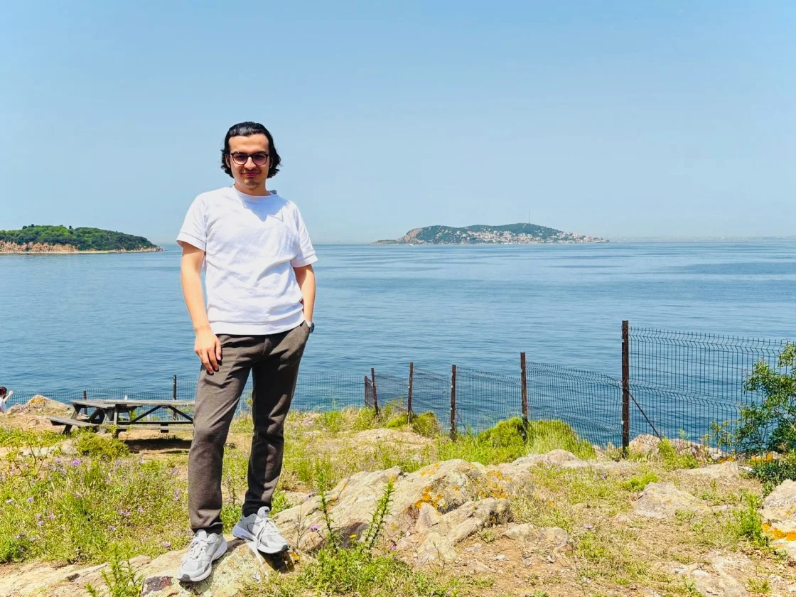

it's me, emre kaan.
i designed this site not as a tool, but as a simple and natural experience. every box, every gap, every shadow — all of them are in harmony with each other. i built both the code and the design myself. laying the foundation didn’t take long, but what truly took time was achieving balance. because to me, a design lives in the details you don’t immediately see.
the spacing between boxes, the softness of the corners, the size of the text, the transitions between colors, the glass-like transparencies, the harmony of shadows with light… all of it was part of a journey where i often spent time just searching for the right color code — sometimes for a single pixel. i tried to use the golden ratio wherever possible, especially in spacing and radii, so that everything speaks the same visual language.
because i believe things that are pleasing to the eye are never a coincidence.
i don’t really like minimalism, but i do like simplicity. minimalism can sometimes feel unnatural. but simplicity is something closer to nature — it offers a kind of instinctive peace. that’s why i stayed away from harsh lines and metallic coldness. instead, i focused on softness, transparency, and a sense of discovery.

hello
again,
we’re
back
how it began
what i’m interested in
my path
technology isn't just about code; it's a tool for bringing a vision to life.
our journey begins at an intersection where innovation and aesthetics merge, where technology transforms into art.
through projects like icontech, my goal isn't merely to offer solutions or pure information, but also to realize
that seemingly unchangeable structures are, in fact, dynamic.
we can always be faster, stronger, and more technical, and these aspects certainly deserve respect, but they can always be achieved by someone.
for me, the real challenge lies in thinking differently about what's right in front of us.
we won't create something from nothing, but we will look at existing things with new eyes—that's where our creativity truly lies.